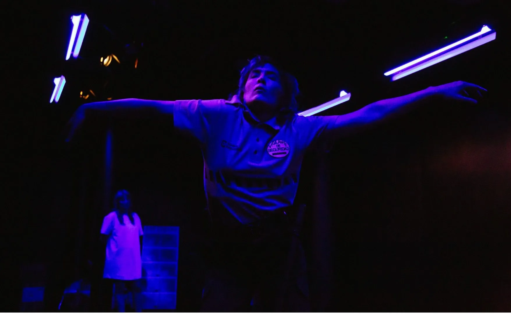
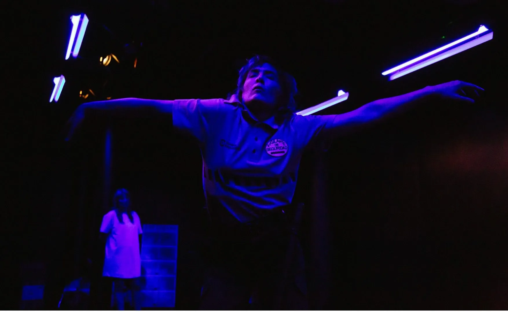

Últimos trabajos

Ludwig van Beethoven (1770-1827)
Fidelio, op. 72


Orquesta y Coro Nacionales de España
EQUIPO ARTÍSTICO
Dirección: David Afkham
Director asistente: Luis Toro Araya
Concepto escénico: Helena Pimenta
Asistente de dirección de escena: José Tomé
Iluminación: Miguel Ruz Velasco
Regidora: Cristina Berhó
Regidor de luces: Enrique Montesdeoca
Reparto:
Maximilian Schmitt (Florestan)
Eleanor Lyons (Leonore)
Peter Rose (Rocco)
Werner Van Mechelen (Pizarro)
Elena Sancho (Marzelline)
Roger Padullés (Jaquino)
Matthias Winckhler (Don Fernando)
Joaquín Notario (Narrador)
Fernando Aguilera (Prisionero 1)
Federico Gallar (Prisionero 2) *Miembros del CNE
Miguel Ángel García Cañamero:Director del CNE
Fotografía: Rafa Marín
Enlace web: link web
El futuro - manual de instrucciones


El pollo campero. Comidas para llevar
CITEMOR 2024. Residencia de creación. Coproducción. Site-specific
EQUIPO ARTÍSTICO
Creación: El pollo campero
Iluminación y espacio: Miguel Ruz Velasco
Diseño sonoro y DJ: Vanesa Rodrigo
Texto: Cris Celada
Imagen: Alejandro Andújar
Fotografía: Susana Paiva
Enlace web: link web
Enlace web: link web
Obra imposible


CCC CONDE DUQUE
EQUIPO ARTÍSTICO
Creación: Los bárbaros
Dramaturgia y dirección: Javier Hernando y Miguel Rojo
En escena: Jesús Barranco y Rocío Bello
Iluminación: Miguel Ruz Velasco
Vestuario: Rocío Bello
Diseño sonoro: Pilar Calvo
Alumno en prácticas Máster ESADCYL: Julián Segovia
Ayudante de escenografía: Nombre
Fotografía: Nombre
Tráiler: Nombre
Diseño de cartel: Nombre
Producción: Nombre
Enlace web: link web
Enlace web: link web
Pequeño cúmulo de abismos

 

CENTRO DRAMÁTICO NACIONAL
EQUIPO ARTÍSTICO
Dirección: Cris Blanco
Dramaturgia: Rocío Bello, Cris Blanco, Óscar Bueno, Anto Rodríguez
Reparto: Oihana Altube, Rocío Bello, Cris Blanco e Íñigo Rodríguez-Claro
Escenografía: Pablo Chaves
Iluminación: Miguel Ruz Velasco
Vestuario: Jorge Dutor
Diseño sonoro: Carlos Parra
Vídeo: Marta Orozco
Ayudante de dirección: Marta Orozco
Ayudante de escenografía: Lia González Álvarez
Fotografía: Geraldine Leloutre
Tráiler: Macarena Díaz
Diseño de cartel: Equipo SOPA
Producción: Centro Dramático Nacional, Cris Blanco y Festival Grec de Barcelona
Enlace web: link web
El futuro


El pollo campero. Comidas para llevar
CITEMOR 2023. Residencia de creación. Coproducción. Site-specific
EQUIPO ARTÍSTICO
Idea y dirección: Cristina Celada
Texto: Cristina Celada em colaboração com Rosa Romero
En escena: Rosa Romero e Cristina Celada
Dirección técnica y diseño de iluminación: Miguel Ruz Velasco
Escenografia, vestuario y accesorios: Alejandro Andújar
Diseño sonoro: César Barco Manrique
Videocreación: Indi Costa
Técnica de sonido: Vanesa Rodrigo
Producción: Inés Lambisto
Imagen cartel: Eugenio Arrogante
Vídeo y teaser Andrés Pino - Conjunto Vacío
Con apoyo de: La Caldera e Instituto Ramon Llull
Fotografía: Susana Paiva
Vídeo y teaser Andrés Pino - Conjunto Vacío
Enlace web: link web
Enlace web: link web
La vida es sueño [el auto sacramental]


Descripción del Proyecto 3.